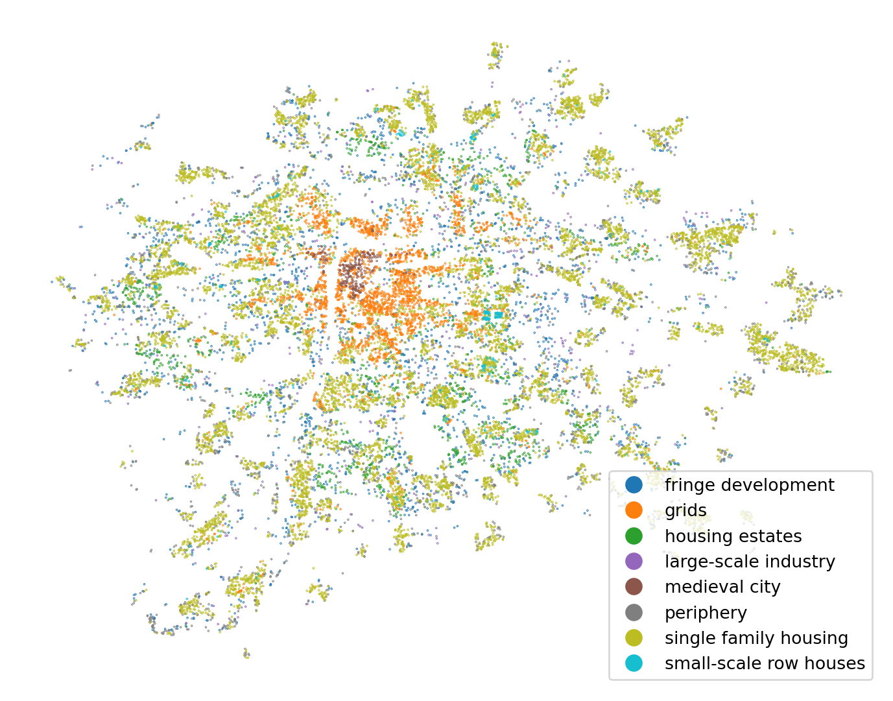
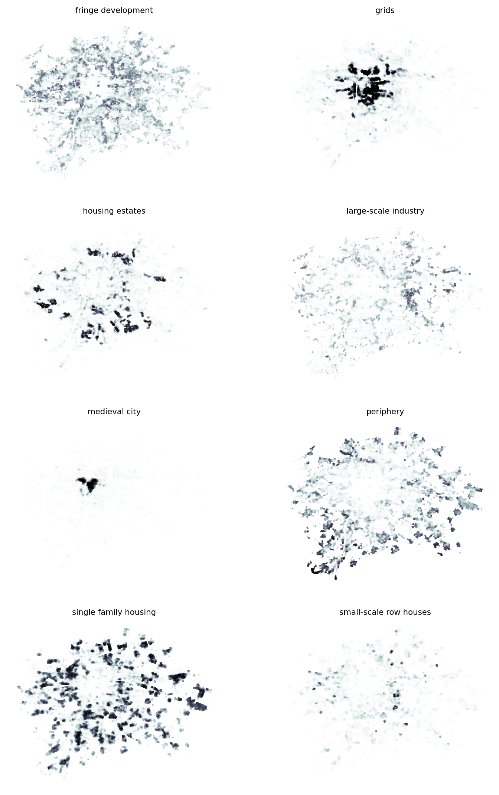

import geopandas as gpd
import matplotlib.pyplot as plt
import numpy as np
import pandas as pd
import shapely
from libpysal import graph
from sklearn import ensemble, metrics, model_selectionClassification and regression
Linear regression, covered in the previous chapter, is often seen as an entry method to enter the world of supervised machine learning. However, not every phenomenon can be explained using a linear relationship, and not everything is a regression. For the former, you need to use methods that have a bit more complicated math behind them (but often the same Python API). For the latter, you will often need to look for classification models. Both of these options are covered in this chapter, which will outline methods of introducing spatial dimension to commonly used machine learning models. To a degree, it is a continuation of the work covered last time, but there are some new things here and there.
This is not an introduction to ML
Note that this material does not aim to cover an introduction to machine learning thoroughly. There are other, much better materials for that. One of them can be scikit-learn’s User guide, but I am sure you will find one that suits you.
Data
The data you will work with today comes from the study on the urban development of Prague, published in Fleischmann et al. (2022). The original dataset is significantly simplified for the purpose of this material and contains point data reflecting the location of buildings in Prague with a subset of measured attributes describing each one and (aggregated) type of urban development they belong to. The type is a categorical variable that will be your dependent variable today. The goal is to use the other variables and spatial information to predict which type each building belongs to.
Caution
The dataset contains ~140k points, so I don’t recommend using explore() on all of it.
building_data = gpd.read_file(
"https://martinfleischmann.net/sds/classification/data/prg_building_locations.gpkg",
)
building_data.head()| cluster | floor_area_ratio | height | compactness | street_alignment | interbuilding_distance | block_perimeter_wall_length | basic_settlement_unit | cadastral zone | geometry | |
|---|---|---|---|---|---|---|---|---|---|---|
| 0 | large-scale industry | 0.614375 | 23.458 | 0.747131 | 10.601522 | 37.185479 | 57.751467 | U cementárny | Radotín | POINT (-749841.681 -1052279.951) |
| 1 | medieval city | 2.993299 | 16.099 | 0.469154 | 8.655982 | 8.547983 | 1033.921828 | Horní malostranský obvod | Malá Strana | POINT (-744432.289 -1042699.409) |
| 2 | periphery | 0.108374 | 3.673 | 0.498831 | 2.473966 | 26.135688 | 74.432812 | Dolní Měcholupy-střed | Dolní Měcholupy | POINT (-733300.261 -1048136.856) |
| 3 | periphery | 0.290723 | 9.097 | 0.627294 | 6.054875 | 32.423481 | 38.592030 | Trojský obvod | Troja | POINT (-742468.177 -1039691.997) |
| 4 | grids | 0.017193 | 4.216 | 0.540439 | 0.134446 | 48.068409 | 49.125654 | Vrch Svatého kříže | Žižkov | POINT (-740093.985 -1043857.813) |
Alternative
Instead of reading the file directly off the web, it is possible to download it manually, store it on your computer, and read it locally. To do that, you can follow these steps:
- Download the file by right-clicking on this link and saving the file
- Place the file in the same folder as the notebook where you intend to read it
- Replace the code in the cell above with:
building_data = gpd.read_file(
"prg_building_locations.gpkg",
)The original taxonomy has been re-classified to provide eight types of urban development shown in the figure below.
ax = building_data.plot(
1 "cluster", legend=True, figsize=(9, 9), markersize=0.005
)
ax.set_axis_off()- 1
- Since you plot many points, they would overlap using the default size.
List the columns containing some numerical value and save it as a variable. There are six of them out of the original few hundred.
independent_variables = [
"floor_area_ratio",
"height",
"compactness",
"street_alignment",
"interbuilding_distance",
"block_perimeter_wall_length",
]It may be helpful to understand the spatial distribution of each of them to know what to expect, and build an intuition about their relationship with the classification above.
fig, axs = plt.subplots(3, 2, figsize=(9, 9))
axs = axs.flatten()
for i, var in enumerate(independent_variables):
building_data.plot(var, markersize=0.01, cmap="bone_r", ax=axs[i])
axs[i].set_title(var, fontdict={"fontsize": 8})
axs[i].set_axis_off()Classification 101
The main task of today is to train classification models using the scikit-learn, so let’s begin.
Data preparation
The dataset contains a bit over 140k points. While more data tend to bring additional performance to ML models, the relationship is far from linear, and you often get nearly as performant models using just a fraction of data. Moreover, it takes longer to train on more data :).
Select a random sample of 20k points you will work with. You can later test for yourself how big of an effect the size of the sample has.
1training_sample = building_data.sample(20_000, random_state=0)- 1
-
random_stateensures reproducibility. The sample will be the same every time.
From the sample, extract the DataFrame with just the independent variables for the simplicity.
independent = training_sample[independent_variables]
independent.head(2)| floor_area_ratio | height | compactness | street_alignment | interbuilding_distance | block_perimeter_wall_length | |
|---|---|---|---|---|---|---|
| 34984 | 0.139151 | 4.833 | 0.321089 | 0.615831 | 26.019856 | 72.103088 |
| 39935 | 2.209054 | 20.939 | 0.584905 | 2.867204 | 21.971761 | 1107.995952 |
Train-test split
Some data are used to train the model, but the same data cannot be used for evaluation. The models tend to learn those exact values, and the performance metrics derived from training data show a much higher score than the model can on unseen data. One way around this is to split the dataset into two parts - train and test. The train part is used to train the model. However, the test part is left out of training and is later used to evaluate performance without worrying that any of the data points were seen by the model before.
scikit-learn offers handy function to split the data into train and test parts, dealing with both dependent and independent variables at the same time.
1X_train, X_test, y_train, y_test = model_selection.train_test_split(
independent, training_sample["cluster"], test_size=0.25, random_state=0
)- 1
-
Xandyare not very explanatory variable names but they are used in ML so often to reflect independent (X) and dependent (y) variables that everyone knows what they mean.
Random Forest Classifier
While there is a large number of ML models available, your goal today is not to understand which ML model is better and how to fine-tune it but how to include the spatial dimension in them. So, let’s not complicate the situation and stick to one of the common models - random forest.
Random forest classifier is implemented within the ensemble module of the scikit-learn and has the API you should already be familiar with. Get the training data and fit the baseline model without thinking about space and geography at all.
- 1
-
n_jobs=-1specifies that the algorithm should use all available cores. Otherwise, it runs in a single thread only. - 2
- The first argument is a 2-D array of independent variables, and the second is a 1-D array of labels you want to predict. You could potentially change
RandomForestClassifier(n_jobs=-1, random_state=0)In a Jupyter environment, please rerun this cell to show the HTML representation or trust the notebook.
On GitHub, the HTML representation is unable to render, please try loading this page with nbviewer.org.
RandomForestClassifier(n_jobs=-1, random_state=0)
Prediction
The trained model can be directly used to predict the classes (type of development in this case). Using the test portion of data, you can get the predicted label:
pred = model.predict(X_test)
predarray(['single family housing', 'single family housing', 'medieval city',
..., 'single family housing', 'grids', 'single family housing'],
dtype=object)Or probabilities for every single class. The class prediction above just involves selecting the one with the maximum probability.
proba = model.predict_proba(X_test)
probaarray([[0.02, 0.18, 0.06, ..., 0.04, 0.42, 0.25],
[0.01, 0. , 0. , ..., 0.13, 0.86, 0. ],
[0. , 0.2 , 0. , ..., 0. , 0. , 0. ],
...,
[0.03, 0.09, 0. , ..., 0.07, 0.49, 0.32],
[0. , 0.99, 0. , ..., 0. , 0. , 0.01],
[0.07, 0.18, 0.04, ..., 0. , 0.52, 0.09]])Both outputs are numpy arrays, but the probabilities would be especially helpful to see as a DataFrame with column names representing class names. Those are available as .classes_:
model.classes_array(['fringe development', 'grids', 'housing estates',
'large-scale industry', 'medieval city', 'periphery',
'single family housing', 'small-scale row houses'], dtype=object)You can quickly combine it all with the original index to get a DataFrame of probabilities.
pd.DataFrame(proba, columns=model.classes_, index=X_test.index)| fringe development | grids | housing estates | large-scale industry | medieval city | periphery | single family housing | small-scale row houses | |
|---|---|---|---|---|---|---|---|---|
| 42677 | 0.02 | 0.18 | 0.06 | 0.03 | 0.0 | 0.04 | 0.42 | 0.25 |
| 72818 | 0.01 | 0.00 | 0.00 | 0.00 | 0.0 | 0.13 | 0.86 | 0.00 |
| 8884 | 0.00 | 0.20 | 0.00 | 0.00 | 0.8 | 0.00 | 0.00 | 0.00 |
| 85469 | 0.25 | 0.00 | 0.01 | 0.01 | 0.0 | 0.10 | 0.63 | 0.00 |
| 111045 | 0.45 | 0.01 | 0.05 | 0.20 | 0.0 | 0.27 | 0.02 | 0.00 |
| ... | ... | ... | ... | ... | ... | ... | ... | ... |
| 17114 | 0.60 | 0.00 | 0.06 | 0.07 | 0.0 | 0.21 | 0.06 | 0.00 |
| 33641 | 0.02 | 0.02 | 0.00 | 0.00 | 0.0 | 0.28 | 0.67 | 0.01 |
| 119950 | 0.03 | 0.09 | 0.00 | 0.00 | 0.0 | 0.07 | 0.49 | 0.32 |
| 22551 | 0.00 | 0.99 | 0.00 | 0.00 | 0.0 | 0.00 | 0.00 | 0.01 |
| 85085 | 0.07 | 0.18 | 0.04 | 0.10 | 0.0 | 0.00 | 0.52 | 0.09 |
5000 rows × 8 columns
Evaluation
Now comes the evaluation part. Normally, you are interested in a number of performance metrics capturing how good the model is. Among the most common ones are accuracy and Cohen’s kappa score. Accuracy captures the fraction of correct predictions, i.e., how many labels in the predicted array equal the known labels. Kappa score It is seen as a more robust metric but not straightforwardly interpretable.
1accuracy = metrics.accuracy_score(pred, y_test)
kappa = metrics.cohen_kappa_score(pred, y_test)
summary = f"""\
Evaluation metrics
==================
Basic model:
Accuracy: {round(accuracy, 3)}
Kappa: {round(kappa, 3)}
"""
2print(summary)- 1
-
scikit-learnimplements both in themetricsmodule. - 2
- Since you will need to compare many models today, let’s start building the summary using multiline f-strings.
Evaluation metrics
==================
Basic model:
Accuracy: 0.585
Kappa: 0.45
The results are not bad, considering the limited amount of information provided in independent variables. Around 58% of labels are correctly predicted.
Apart from the model performance, you can also evaluate how important each of the independent variables for the result is using the .feature_importances_ metric. Again, wrapping it in a pandas object is useful to get feature names alongside the values.
pd.Series(model.feature_importances_, index=model.feature_names_in_).sort_values()compactness 0.125213
street_alignment 0.125471
floor_area_ratio 0.166246
height 0.174648
block_perimeter_wall_length 0.187244
interbuilding_distance 0.221179
dtype: float64There seems to be a relatively good balance of importance ranging from 12% for compactness to 22% for inter-building distance. Check if that matches our intuition in relation to the spatial distribution of each of them.
Cross-validated prediction
Now, if you want to plot the predicted labels on a map, you can do that reliably only for the test sample. The training sample was seen by the model and would not be representative of model capabilities. Nevertheless, you can create a map using the complete sample, just not using exactly the same model for all its parts. Welcome cross-validated prediction.
Cross-validated (CV) prediction splits the dataset (before you divided it into train and test) into a small number of parts and trains a separate model to predict labels for each of them. In the example below, it creates four equally-sized parts and then takes three of them as train part to train a model that is used to predict labels on the fourth one. Then, it switches the one that is left out and repeats the process until there are labels for every part. The resulting labels should not contain any data leakage between train and test samples. However, as described below, that is not always the case when dealing with spatial data.
predicted = model_selection.cross_val_predict(
model, independent, training_sample["cluster"], cv=4, n_jobs=-1
)
ax = training_sample.plot(predicted, legend=True, figsize=(9, 9), markersize=0.1)
ax.set_axis_off()
What CV-prediction allows to not only plot the labels but importantly to plot the spatial pattern of errors.
ax = training_sample.plot(
predicted == training_sample["cluster"],
categorical=True,
figsize=(9, 9),
markersize=0.1,
cmap="bwr_r",
legend=True,
)
ax.set_axis_off()As with the linear regression, a spatial autocorrelation of errors means that the model does not represent space reliably and may need some adaptations.
Spatial cross-validation
When dividing the data into train and test parts, you are trying to eliminate data leakage, which happens when information from one set makes its way to the other. The evaluation affected by leakage then indicates better results than the reality is. This works well for most of data, but not so much for spatial data. Tobler’s first law of geography, which says that nearby things are similar, breaks the assumption of no leakage. Two points that are right next to each other in space, one randomly allocated to the train part and the other to the test part, are not statistically independent. You can assume that they will be similar, and this similarity caused by the spatial proximity comes with a potential data leakage.
Spatial CV mitigates the issue by including a spatial dimension in the train-test split. The aim is to divide the whole study area into smaller regions and allocate whole regions to train and test splits. You can do that based on many criteria, but it is handy to have a variable representing those regions as the "basic_settlement_unit" column in your DataFrame.
With a categorical column indicating groups, you can use the StratifiedGroupKFold class from the scikit-learn to create the folds.
1gkf = model_selection.StratifiedGroupKFold(n_splits=5)
2splits = gkf.split(
training_sample,
training_sample.cluster,
groups=training_sample.basic_settlement_unit,
)- 1
- Specify the number of folds (parts).
- 2
- Get the iterator with different splits.
The splits variable now contains an iterator - an object we can loop through that gives you train and test parts for each split. You can easily extract the labels indicating the splits:
1split_label = np.empty(len(training_sample), dtype=float)
2for i, (train, test) in enumerate(splits):
3 split_label[test] = i
4training_sample["split"] = split_label- 1
- Create an empty array you will fill with the actual label using the for loop.
- 2
-
Loop over
splits. Every loop gives you indices fortrainandtestsplits. You can useenumerateto get a split label. - 3
- Assing split labels to the subset of points used for the test in each loop.
- 4
-
Assing the labels to the
DataFrame.
With the labels extracted from StratifiedGroupKFold, you can plot the splits on a map.
1ax = training_sample.plot(
"split", categorical=True, figsize=(9, 9), markersize=0.1, legend=True
)
2training_sample.dissolve("basic_settlement_unit").convex_hull.boundary.plot(
ax=ax, color="k", linewidth=0.5, markersize=0
)
ax.set_axis_off()- 1
- Plot the split labels
- 2
- Plot the convex hull around each basic settlement unit for better visualization of regions in spatial CV.
With the new, and arguably better train-test, split, you can create new training and evaluation data. You can use the split with the label 0 as a test part and the rest as a train part.
train = training_sample["split"] != 0
X_train = independent.loc[train]
y_train = training_sample["cluster"].loc[train]
test = training_sample["split"] == 0
X_test = independent.loc[test]
y_test = training_sample["cluster"].loc[test]New data require a new model.
rf_spatial_cv = ensemble.RandomForestClassifier(random_state=0, n_jobs=-1)
rf_spatial_cv.fit(X_train, y_train)RandomForestClassifier(n_jobs=-1, random_state=0)In a Jupyter environment, please rerun this cell to show the HTML representation or trust the notebook.
On GitHub, the HTML representation is unable to render, please try loading this page with nbviewer.org.
RandomForestClassifier(n_jobs=-1, random_state=0)
And its evaluation. Just use += to add to the existing summary.
pred = rf_spatial_cv.predict(X_test)
accuracy_spatial_cv = metrics.accuracy_score(pred, y_test)
kappa_spatial_cv = metrics.cohen_kappa_score(pred, y_test)
summary += f"""\
Basic model with spatial cross-validation:
Accuracy: {round(accuracy_spatial_cv, 3)}
Kappa: {round(kappa_spatial_cv, 3)}
"""
print(summary)Evaluation metrics
==================
Basic model:
Accuracy: 0.585
Kappa: 0.45
Basic model with spatial cross-validation:
Accuracy: 0.57
Kappa: 0.419
The results are marginally worse, but that is expected. It means that the original model was indeed a bit leaking! The model based on the spatial CV should be more robust than the previous one, meaning that it should perform as expected on unseen data.
The result is worse on paper but is now more spatially robust - it will generalize better on unseen data.
Feature engineering
Sometimes, the original data is just not enough for a decent prediction. At that point, you may want to include some other variables that would help, but they may not be readily available, and you need to create them.
The first option is to look at the data you have and extract some additional information from it using methods known as map synthesis.
Map synthesis
Map synthesis uses the spatial structure of the data to derive new features. There’s no external input, you simply put geography at work.
Point density
There are methods of map synthesis that work directly with existing values, and there are those that look solely at the spatial distribution of your data. One example of the latter is a measurement of point density (number of neighbors within a distance band).
You should already know how to do that using the graph module of libpysal. Create a Graph and extract its cardinalities (the number of neighbors).
distance_200 = graph.Graph.build_distance_band(training_sample, 200)
training_sample["points_in_200m"] = distance_200.cardinalitiesLet’s check if the result has some meaningful spatial pattern.
ax = training_sample.plot("points_in_200m", figsize=(9, 9), markersize=0.1)
ax.set_axis_off()
It is not a strong one, but there are clear pockets of the higher point density, so this new column can help with the prediction accuracy. Create a new set of independent variables, including the new one, and generate new training and evaluation data.
independent_proximity = training_sample[
1 independent_variables + ["points_in_200m"]
]
X_train = independent_proximity.loc[train]
y_train = training_sample["cluster"].loc[train]
X_test = independent_proximity.loc[test]
y_test = training_sample["cluster"].loc[test]- 1
-
Add the new column to the list of existing columns and use it to subset the
DataFrame.
The rest is simply rinse and repeat. Create the model and train it on new data.
rf_proximity = ensemble.RandomForestClassifier(random_state=0, n_jobs=-1)
rf_proximity.fit(X_train, y_train)RandomForestClassifier(n_jobs=-1, random_state=0)In a Jupyter environment, please rerun this cell to show the HTML representation or trust the notebook.
On GitHub, the HTML representation is unable to render, please try loading this page with nbviewer.org.
RandomForestClassifier(n_jobs=-1, random_state=0)
And evaluate it in the same way as before.
pred = rf_proximity.predict(X_test)
accuracy_proximity = metrics.accuracy_score(pred, y_test)
kappa_proximity = metrics.cohen_kappa_score(pred, y_test)
summary += f"""\
Points within 200m (spatial CV):
Accuracy: {round(accuracy_proximity, 3)}
Kappa: {round(kappa_proximity, 3)}
"""
print(summary)Evaluation metrics
==================
Basic model:
Accuracy: 0.585
Kappa: 0.45
Basic model with spatial cross-validation:
Accuracy: 0.57
Kappa: 0.419
Points within 200m (spatial CV):
Accuracy: 0.598
Kappa: 0.46
Remember that your baseline model is the Basic model with spatial cross-validation. Compared to that, the performance of the new model is a bit better, especially when looking at Cohen’s kappa. It seems that the point density brings some value. You can check how important it is compared to the original variables.
pd.Series(
rf_proximity.feature_importances_, index=rf_proximity.feature_names_in_
).sort_values()compactness 0.108827
street_alignment 0.109489
points_in_200m 0.126702
floor_area_ratio 0.146121
height 0.159027
block_perimeter_wall_length 0.173754
interbuilding_distance 0.176080
dtype: float64It seems that not that much, but each percent of accuracy counts.
Point density is just one example, and there are many more. Below, when dealing with spatial dependence, you’ll get back to map synthesis once again. But before that, let’s use some external data to improve the model.
Proximity variables
Sometimes, you may have an assumption that a distance to a specific location or a set of locations makes a difference to the spatial distribution of the dependent variable, and the inclusion of a variable reflecting this distance could help the model. You can think of distance to subway stations when dealing with rent price prediction or distance to highways when trying to predict air pollution. In the case of urban development in Prague, it may be interesting to capture the distance from the city centre. Prague is a very monocentric city whose development happened over the years in a series of concentric rings. First, the medieval centre, then industrial-era neighborhoods behind the original city walls, and so on. Therefore, a distance to Old Town Square may be useful for the development type prediction.
You have done this before, so fire up geocoding, and extract the point representing the square in the same CRS the rest of the data is in.
old_town_square = (
gpd.tools.geocode("Old Town Square, Prague")
.to_crs(building_data.crs)
.geometry.item()
)With the point, you can measure the distance from every building in the training sample and use the resulting column as another independent variable.
training_sample["distance_to_old_town"] = training_sample.distance(old_town_square)
ax = training_sample.plot("distance_to_old_town", figsize=(9, 9), markersize=0.1)
ax.set_axis_off()Now simply add it to the DataFrame representing independent variables and the rest is the same.
independent_distance = training_sample[
independent_variables + ["points_in_200m", "distance_to_old_town"]
]
X_train = independent_distance.loc[train]
y_train = training_sample["cluster"].loc[train]
X_test = independent_distance.loc[test]
y_test = training_sample["cluster"].loc[test]Get a new, hopefully better model.
rf_distance = ensemble.RandomForestClassifier(random_state=0, n_jobs=-1)
rf_distance.fit(X_train, y_train)RandomForestClassifier(n_jobs=-1, random_state=0)In a Jupyter environment, please rerun this cell to show the HTML representation or trust the notebook.
On GitHub, the HTML representation is unable to render, please try loading this page with nbviewer.org.
RandomForestClassifier(n_jobs=-1, random_state=0)
And check if the new variable makes a difference.
pred = rf_distance.predict(X_test)
accuracy_distance = metrics.accuracy_score(pred, y_test)
kappa_distance = metrics.cohen_kappa_score(pred, y_test)
summary += f"""\
Distance to Old Town Sq + above (spatial CV):
Accuracy: {round(accuracy_distance, 3)}
Kappa: {round(kappa_distance, 3)}
"""
print(summary)Evaluation metrics
==================
Basic model:
Accuracy: 0.585
Kappa: 0.45
Basic model with spatial cross-validation:
Accuracy: 0.57
Kappa: 0.419
Points within 200m (spatial CV):
Accuracy: 0.598
Kappa: 0.46
Distance to Old Town Sq + above (spatial CV):
Accuracy: 0.651
Kappa: 0.532
That is quite a decent bump in performance! It seems that the distance to the city centre is not bad in explaining the development typology. Check how important it is within the model.
pd.Series(
rf_distance.feature_importances_, index=rf_distance.feature_names_in_
).sort_values()compactness 0.083833
street_alignment 0.084431
points_in_200m 0.114884
floor_area_ratio 0.118693
height 0.121907
block_perimeter_wall_length 0.136004
interbuilding_distance 0.143222
distance_to_old_town 0.197027
dtype: float64Interestingly enough, it seems to be more explanatory than any of the variables reflecting the actual morphology.
Map matching
In other cases, you can make use of other data and link it to existing data. When you join the data based on spatial operation, you can talk about map matching. You can measure a number of points of interest in the vicinity of each location, link the data from rasters, interpolate them from point patterns or from polygons to other polygons. By now, you should know all that, so there’s no need to go into detail. Sticking to a simple case, map matching can also be done using a spatial join.
Load the price data you worked with in the Learning GeoPandas chapter.
price = gpd.read_file(
"https://martinfleischmann.net/sds/geographic_data/data/SED_CenovaMapa_p_shp.zip",
)
1price["CENA"] = price["CENA"].replace("N", None).astype("float")
price.head(2)- 1
-
Price is in the column called
"CENA", which needs to be turned to floats.
| KOD_UNI | MAPA | STRED | CENA | FUNKCE | TYP_CENY | zmena | Shape_Leng | Shape_Area | geometry | |
|---|---|---|---|---|---|---|---|---|---|---|
| 0 | 11 | 4 | 0 | 7100.0 | R2 | 181920-pary | 0 | 2032.256585 | 82031.672127 | POLYGON Z ((-737015.74 -1034316.4 0, -737018.2... |
| 1 | 10921 | 4 | 0 | 9030.0 | R1 | 181920-pary | 0 | 450.070407 | 11837.482327 | POLYGON Z ((-737103.202 -1034331.743 0, -73710... |
Before any spatial joins, check the CRS.
price.crs.equals(training_sample.crs)FalseAnd, like in this case, don’t forget to re-project geometries in case of a CRS mismatch. Then you can go ahead with the spatial join.
price = price.to_crs(training_sample.crs)
training_sample_price = training_sample.sjoin(
1 price[["CENA", "geometry"]].dropna()
)
training_sample_price.head(2)- 1
- Ignore rows with missing prices, as those will bring no value, only issues.
| cluster | floor_area_ratio | height | compactness | street_alignment | interbuilding_distance | block_perimeter_wall_length | basic_settlement_unit | cadastral zone | geometry | split | points_in_200m | distance_to_old_town | index_right | CENA | |
|---|---|---|---|---|---|---|---|---|---|---|---|---|---|---|---|
| 34984 | single family housing | 0.139151 | 4.833 | 0.321089 | 0.615831 | 26.019856 | 72.103088 | Běchovice | Běchovice | POINT (-728888.096 -1045720.683) | 1.0 | 7 | 14202.783900 | 4769 | 7100.0 |
| 39935 | grids | 2.209054 | 20.939 | 0.584905 | 2.867204 | 21.971761 | 1107.995952 | Na Pankráci | Nusle | POINT (-742882.423 -1046165.913) | 0.0 | 23 | 3155.348653 | 5033 | 12720.0 |
You can prepare data for a model with price included.
independent_proximity_price = training_sample_price[
independent_variables + ["points_in_200m", "distance_to_old_town", "CENA"]
]
1train_price = training_sample_price["split"] != 0
X_train = independent_proximity_price.loc[train_price]
y_train = training_sample_price["cluster"].loc[train_price]
test_price = training_sample_price["split"] == 0
X_test = independent_proximity_price.loc[test_price]
y_test = training_sample_price["cluster"].loc[test_price]- 1
-
Get the new split mask as due to some points not being merged to any geometries,
training_sample_priceis slightly shorter thantraining_sample, and the original mask does not align.
The rest, you know. First the model.
rf_distance_price = ensemble.RandomForestClassifier(random_state=0, n_jobs=-1)
rf_distance_price.fit(X_train, y_train)RandomForestClassifier(n_jobs=-1, random_state=0)In a Jupyter environment, please rerun this cell to show the HTML representation or trust the notebook.
On GitHub, the HTML representation is unable to render, please try loading this page with nbviewer.org.
RandomForestClassifier(n_jobs=-1, random_state=0)
Then, the evaluation.
pred = rf_distance_price.predict(X_test)
accuracy_distance_price = metrics.accuracy_score(pred, y_test)
kappa_distance_price = metrics.cohen_kappa_score(pred, y_test)
summary += f"""\
Price + above (spatial CV):
Accuracy: {round(accuracy_distance_price, 3)}
Kappa: {round(kappa_distance_price, 3)}
"""
print(summary)Evaluation metrics
==================
Basic model:
Accuracy: 0.585
Kappa: 0.45
Basic model with spatial cross-validation:
Accuracy: 0.57
Kappa: 0.419
Points within 200m (spatial CV):
Accuracy: 0.598
Kappa: 0.46
Distance to Old Town Sq + above (spatial CV):
Accuracy: 0.651
Kappa: 0.532
Price + above (spatial CV):
Accuracy: 0.673
Kappa: 0.553
Another improvement. It seems that price is not that critical, but is surely brings some value.
pd.Series(
rf_distance_price.feature_importances_, index=rf_distance_price.feature_names_in_
).sort_values()compactness 0.065115
street_alignment 0.066357
floor_area_ratio 0.086397
points_in_200m 0.103891
height 0.111930
interbuilding_distance 0.119208
CENA 0.136275
block_perimeter_wall_length 0.139565
distance_to_old_town 0.171261
dtype: float64As the feature importance shows, it is among the most important variables, though the distance to the Old Town Sq. is still unbeaten.
Spatial dependence
Let’s get back to map synthesis and talk about spatial dependence. Some phenomena, urban development type may be one of them, are not explained only by values linked to individual geometries but also by the spatial configuration of the observations around. If the mean inter-building distance of observation A is small but that of nearly all observations around is high, it may be worth taking that into account. You can say that the predicted value on observation A depends on the spatial context and configuration around it. Generally speaking, the values of observations are related to each other based on their distance and are spatially dependent, reflecting Tobler’s First law of geography once again.
Include spatially lagged variables in the model
The simplest way of incorporating spatial dependence to a generic ML model is to add variables to your set of independent variables capturing spatial dependence through spatial lag.
Use the spatial weights matrix created above and generate a spatial lag of all independent variables.
1distance_200_row = distance_200.transform("r")
2lagged_variables = []
3for var in independent_variables:
4 training_sample[f"{var}_lag"] = distance_200_row.lag(training_sample[var])
5 lagged_variables.append(f"{var}_lag")
training_sample.head(2)- 1
- Remember that the graph needs to be row-standardised to get a mean value.
- 2
- Create and empty list that will be populated with names of new lagged variables.
- 3
- Loop through the list of existing independent variables.
- 4
- Measure a lag for each and assign it to a column.
- 5
- Add the name to the list.
| cluster | floor_area_ratio | height | compactness | street_alignment | interbuilding_distance | block_perimeter_wall_length | basic_settlement_unit | cadastral zone | geometry | split | points_in_200m | distance_to_old_town | floor_area_ratio_lag | height_lag | compactness_lag | street_alignment_lag | interbuilding_distance_lag | block_perimeter_wall_length_lag | |
|---|---|---|---|---|---|---|---|---|---|---|---|---|---|---|---|---|---|---|---|
| 34984 | single family housing | 0.139151 | 4.833 | 0.321089 | 0.615831 | 26.019856 | 72.103088 | Běchovice | Běchovice | POINT (-728888.096 -1045720.683) | 1.0 | 7 | 14202.783900 | 0.199820 | 5.657571 | 0.546654 | 5.776773 | 23.220023 | 58.535778 |
| 39935 | grids | 2.209054 | 20.939 | 0.584905 | 2.867204 | 21.971761 | 1107.995952 | Na Pankráci | Nusle | POINT (-742882.423 -1046165.913) | 0.0 | 23 | 3155.348653 | 1.281836 | 14.360696 | 0.539464 | 3.990104 | 21.274888 | 324.468169 |
It may be interesting to assess the effect of spatial dependence without the variables added above. Combine original independent variables with the new lagged and prepare new training data.
independent_lag = training_sample[independent_variables + lagged_variables]
X_train = independent_lag.loc[train]
y_train = training_sample["cluster"].loc[train]
X_test = independent_lag.loc[test]
y_test = training_sample["cluster"].loc[test]Fit the new model, which should be able to use spatial dependence.
rf_lag_200m = ensemble.RandomForestClassifier(random_state=0, n_jobs=-1)
rf_lag_200m.fit(X_train, y_train)RandomForestClassifier(n_jobs=-1, random_state=0)In a Jupyter environment, please rerun this cell to show the HTML representation or trust the notebook.
On GitHub, the HTML representation is unable to render, please try loading this page with nbviewer.org.
RandomForestClassifier(n_jobs=-1, random_state=0)
And check how significant an effect it has on the model performance.
pred = rf_lag_200m.predict(X_test)
accuracy_lag = metrics.accuracy_score(pred, y_test)
kappa_lag = metrics.cohen_kappa_score(pred, y_test)
summary += f"""\
Spatial dependence - lagged model (spatial CV):
Accuracy: {round(accuracy_lag, 3)}
Kappa: {round(kappa_lag, 3)}
"""
print(summary)Evaluation metrics
==================
Basic model:
Accuracy: 0.585
Kappa: 0.45
Basic model with spatial cross-validation:
Accuracy: 0.57
Kappa: 0.419
Points within 200m (spatial CV):
Accuracy: 0.598
Kappa: 0.46
Distance to Old Town Sq + above (spatial CV):
Accuracy: 0.651
Kappa: 0.532
Price + above (spatial CV):
Accuracy: 0.673
Kappa: 0.553
Spatial dependence - lagged model (spatial CV):
Accuracy: 0.678
Kappa: 0.573
That is surely not negligible, considering that no other data were needed.
pd.Series(
rf_lag_200m.feature_importances_, index=rf_lag_200m.feature_names_in_
).sort_values()compactness 0.043229
street_alignment 0.046029
height 0.057588
floor_area_ratio 0.058145
block_perimeter_wall_length 0.067363
street_alignment_lag 0.070991
compactness_lag 0.075911
height_lag 0.102984
interbuilding_distance 0.103224
interbuilding_distance_lag 0.114796
block_perimeter_wall_length_lag 0.126160
floor_area_ratio_lag 0.133580
dtype: float64The feature importance very clearly shows that when detecting urban typology, the context is always more important than the individual observation. It is expected as the typology attempts to reflect the general pattern of development but you can see the similar effect in many other situations.
Spatial heterogneity
While ML models like the random forest learn interaction between variables, they are not always able to pick up spatial heterogeneity of the interaction between dependent and independent variables. Last week, you tried to deal with spatial heterogeneity using the categorical variable reflecting the spatial fixed effect. You could do the same here, but let’s try another approach.
Include x, y coordinates
Including the x and y (or longitude and latitude) coordinates of your geometries is a clever way of capturing the spatial heterogeneity in the model. The location serves as a proxy for any unexplained variance of a spatial nature. It does not help you with interpretation, as coordinates do not explain anything.
The model will also struggle to generalise outside of the original spatial extent. So while a model trained on Prague using the original set of variables could be easily used in any other Czech city, like Brno, the model that includes coordinates would have no idea how to interpret the values it would see in Brno. Use with caution.
Technically, it is dead simple. You just include coordinates as another two columns.
training_sample[["x", "y"]] = training_sample.get_coordinates()
training_sample.head(2)| cluster | floor_area_ratio | height | compactness | street_alignment | interbuilding_distance | block_perimeter_wall_length | basic_settlement_unit | cadastral zone | geometry | ... | points_in_200m | distance_to_old_town | floor_area_ratio_lag | height_lag | compactness_lag | street_alignment_lag | interbuilding_distance_lag | block_perimeter_wall_length_lag | x | y | |
|---|---|---|---|---|---|---|---|---|---|---|---|---|---|---|---|---|---|---|---|---|---|
| 34984 | single family housing | 0.139151 | 4.833 | 0.321089 | 0.615831 | 26.019856 | 72.103088 | Běchovice | Běchovice | POINT (-728888.096 -1045720.683) | ... | 7 | 14202.783900 | 0.199820 | 5.657571 | 0.546654 | 5.776773 | 23.220023 | 58.535778 | -728888.096013 | -1.045721e+06 |
| 39935 | grids | 2.209054 | 20.939 | 0.584905 | 2.867204 | 21.971761 | 1107.995952 | Na Pankráci | Nusle | POINT (-742882.423 -1046165.913) | ... | 23 | 3155.348653 | 1.281836 | 14.360696 | 0.539464 | 3.990104 | 21.274888 | 324.468169 | -742882.423186 | -1.046166e+06 |
2 rows × 21 columns
To check the effect of spatial heterogeneity compared to the baseline model, create new training data with the original variables and coordinates on top.
independent_coordinates = training_sample[independent_variables + ["x", "y"]]
X_train = independent_coordinates.loc[train]
y_train = training_sample["cluster"].loc[train]
X_test = independent_coordinates.loc[test]
y_test = training_sample["cluster"].loc[test]Train the model.
rf_coordinates = ensemble.RandomForestClassifier(random_state=0, n_jobs=-1)
rf_coordinates.fit(X_train, y_train)RandomForestClassifier(n_jobs=-1, random_state=0)In a Jupyter environment, please rerun this cell to show the HTML representation or trust the notebook.
On GitHub, the HTML representation is unable to render, please try loading this page with nbviewer.org.
RandomForestClassifier(n_jobs=-1, random_state=0)
And evaluate its performance.
pred = rf_coordinates.predict(X_test)
accuracy_coordinates = metrics.accuracy_score(pred, y_test)
kappa_coordinates = metrics.cohen_kappa_score(pred, y_test)
summary += f"""\
Spatial heterogeneity - coordinates (spatial CV):
Accuracy: {round(accuracy_coordinates, 3)}
Kappa: {round(kappa_coordinates, 3)}
"""
print(summary)Evaluation metrics
==================
Basic model:
Accuracy: 0.585
Kappa: 0.45
Basic model with spatial cross-validation:
Accuracy: 0.57
Kappa: 0.419
Points within 200m (spatial CV):
Accuracy: 0.598
Kappa: 0.46
Distance to Old Town Sq + above (spatial CV):
Accuracy: 0.651
Kappa: 0.532
Price + above (spatial CV):
Accuracy: 0.673
Kappa: 0.553
Spatial dependence - lagged model (spatial CV):
Accuracy: 0.678
Kappa: 0.573
Spatial heterogeneity - coordinates (spatial CV):
Accuracy: 0.632
Kappa: 0.501
There indeed is some degree of spatial heterogeneity, but its effect is not that strong as that of spatial dependence.
pd.Series(
rf_coordinates.feature_importances_, index=rf_coordinates.feature_names_in_
).sort_values()compactness 0.079772
street_alignment 0.082567
height 0.120324
floor_area_ratio 0.121949
block_perimeter_wall_length 0.140227
x 0.141132
y 0.144687
interbuilding_distance 0.169343
dtype: float64Interpreting feature importance is a bit more complicated, as x and y are not to be treated as two separate variables but as a pair. You can try to sum their importance, but remember that the result may be misleading.
Heterogeneity and dependence
You can try to combine the effects of heterogeneity and dependence within a single model as each seems to help when used separately.
independent_coordinates = training_sample[
independent_variables + lagged_variables + ["x", "y"]
]
X_train = independent_coordinates.loc[train]
y_train = training_sample["cluster"].loc[train]
X_test = independent_coordinates.loc[test]
y_test = training_sample["cluster"].loc[test]Let’s consider this a final model of the day.
rf_het_dep = ensemble.RandomForestClassifier(random_state=0, n_jobs=-1)
rf_het_dep.fit(X_train, y_train)RandomForestClassifier(n_jobs=-1, random_state=0)In a Jupyter environment, please rerun this cell to show the HTML representation or trust the notebook.
On GitHub, the HTML representation is unable to render, please try loading this page with nbviewer.org.
RandomForestClassifier(n_jobs=-1, random_state=0)
The final evaluation:
pred = rf_het_dep.predict(X_test)
accuracy_het_dep = metrics.accuracy_score(pred, y_test)
kappa_het_dep = metrics.cohen_kappa_score(pred, y_test)
summary += f"""\
Spatial dependence + heterogeneity (spatial CV):
Accuracy: {round(accuracy_het_dep, 3)}
Kappa: {round(kappa_het_dep, 3)}
"""
print(summary)Evaluation metrics
==================
Basic model:
Accuracy: 0.585
Kappa: 0.45
Basic model with spatial cross-validation:
Accuracy: 0.57
Kappa: 0.419
Points within 200m (spatial CV):
Accuracy: 0.598
Kappa: 0.46
Distance to Old Town Sq + above (spatial CV):
Accuracy: 0.651
Kappa: 0.532
Price + above (spatial CV):
Accuracy: 0.673
Kappa: 0.553
Spatial dependence - lagged model (spatial CV):
Accuracy: 0.678
Kappa: 0.573
Spatial heterogeneity - coordinates (spatial CV):
Accuracy: 0.632
Kappa: 0.501
Spatial dependence + heterogeneity (spatial CV):
Accuracy: 0.711
Kappa: 0.615
This seems to be the best model so far. Keep in mind that variables coming from the feature engineering section are not included here, so there still may be some space for an improvement.
pd.Series(
rf_het_dep.feature_importances_, index=rf_het_dep.feature_names_in_
).sort_values()compactness 0.032525
street_alignment 0.036007
floor_area_ratio 0.047823
height 0.049390
street_alignment_lag 0.057048
block_perimeter_wall_length 0.057807
compactness_lag 0.063732
y 0.068235
x 0.071409
height_lag 0.083217
interbuilding_distance 0.090460
interbuilding_distance_lag 0.102752
block_perimeter_wall_length_lag 0.117814
floor_area_ratio_lag 0.121782
dtype: float64Both lagged variables and coordinates are valuable here but keep in mind that the strength of these effects will vary dependning on specific use case. What is clearly useful in this case may have no value in other situations.
Prediction on the whole dataset
If you consider rf_het_dep a final model you are happy with, you can check how it performs on the full dataset, not only on the sample of 20k observations used above.
First, you will need all the variables computed for the full dataset.
distance_200_all = graph.Graph.build_distance_band(building_data, 200).transform("r")
for var in independent_variables:
building_data[f"{var}_lag"] = distance_200_all.lag(building_data[var])
building_data[["x", "y"]] = building_data.get_coordinates()Then, you can use the model for inference. First, check the probabilities.
probabilities = rf_het_dep.predict_proba(
building_data[independent_variables + lagged_variables + ["x", "y"]]
)
probabilitiesarray([[0.29, 0.05, 0.42, ..., 0. , 0.05, 0. ],
[0. , 0.04, 0. , ..., 0. , 0. , 0. ],
[0.1 , 0. , 0. , ..., 0.49, 0.41, 0. ],
...,
[0. , 1. , 0. , ..., 0. , 0. , 0. ],
[0. , 1. , 0. , ..., 0. , 0. , 0. ],
[0.52, 0.06, 0.01, ..., 0.1 , 0.07, 0.01]])Plotting class-based probabilities allows you to visualise the likelihood that each observation (building in our case) belonging to each class.
fig, axs = plt.subplots(4, 2, figsize=(9, 14))
axs = axs.flatten()
for i, ax in enumerate(axs):
building_data.plot(
probabilities[:, i], markersize=0.01, cmap="bone_r", ax=ax, vmin=0, vmax=1,
)
axs[i].set_title(rf_het_dep.classes_[i], fontdict={"fontsize": 8})
ax.set_axis_off()
Plotting the maximum probability assigned to an observation regardless of class is also useful. This can be seen as a proxy of the certainty of a model and allows you to identify areas where the model works well and has no issue picking up the correct class and those where it struggles.
building_data.plot(
probabilities.max(axis=1), markersize=0.01, cmap="cividis_r", figsize=(9, 9)
).set_axis_off()If you want just a label, it is easier to use the predict() method instead.
predicted_class = rf_het_dep.predict(
building_data[independent_variables + lagged_variables + ["x", "y"]]
)The predicted labels allow you to check the spatial pattern of errors as you did earlier.
building_data.plot(
predicted_class == building_data["cluster"],
categorical=True,
figsize=(9, 9),
markersize=0.005,
cmap="bwr_r",
legend=True,
).set_axis_off()Finally, you may be interested in the performance of the model on the full dataset.
accuracy_all = metrics.accuracy_score(predicted_class, building_data["cluster"])
kappa_all = metrics.cohen_kappa_score(predicted_class, building_data["cluster"])
summary += f"""
Complete dataset
----------------
Spatial dependence + heterogeneity (spatial CV):
Accuracy: {round(accuracy_all, 3)}
Kappa: {round(kappa_all, 3)}
"""
print(summary)Evaluation metrics
==================
Basic model:
Accuracy: 0.585
Kappa: 0.45
Basic model with spatial cross-validation:
Accuracy: 0.57
Kappa: 0.419
Points within 200m (spatial CV):
Accuracy: 0.598
Kappa: 0.46
Distance to Old Town Sq + above (spatial CV):
Accuracy: 0.651
Kappa: 0.532
Price + above (spatial CV):
Accuracy: 0.673
Kappa: 0.553
Spatial dependence - lagged model (spatial CV):
Accuracy: 0.678
Kappa: 0.573
Spatial heterogeneity - coordinates (spatial CV):
Accuracy: 0.632
Kappa: 0.501
Spatial dependence + heterogeneity (spatial CV):
Accuracy: 0.711
Kappa: 0.615
Complete dataset
----------------
Spatial dependence + heterogeneity (spatial CV):
Accuracy: 0.776
Kappa: 0.703
Not bad at all. More than 75% of buildings were correctly classified using only the data you were given in the beginning and geography. Just note that since the evaluation based on the full dataset is done based on a different sample of data than all those above, the values are not entirely comparable.
Self-study topic
The part below will not be covered in the class. It contains an introduction to regression models using the scikit-learn. You will need it to complete the exercise. However, since this is the final session of the course, it is time to let you learn by yourself.
Regression
Classification problems are only one part of ML. The other big chunk focuses on regression problems, where your target variable is not a class but a value. Consider the rent price or air pollution levels if I use the abovementioned examples. All of what was covered above applies nearly equally to regression models, except evaluation methods. But all of the spatial components remain the same.
Below is an example of a regression model using random forest trying to estimate the rent price based on the same set of independent variables used in the classification task above.
Split to train and test parts is the same. The same would also be the application of spatial cross-validation if you wanted to go in that direction.
independent = training_sample_price[independent_variables]
X_train, X_test, y_train, y_test = model_selection.train_test_split(
independent, training_sample_price["CENA"], test_size=0.25, random_state=0
)The API of regression models mirrors the API of classification models. There are no surprises waiting for you there.
price_model = ensemble.RandomForestRegressor(random_state=0, n_jobs=-1)
price_model.fit(X_train, y_train)RandomForestRegressor(n_jobs=-1, random_state=0)In a Jupyter environment, please rerun this cell to show the HTML representation or trust the notebook.
On GitHub, the HTML representation is unable to render, please try loading this page with nbviewer.org.
RandomForestRegressor(n_jobs=-1, random_state=0)
The evaluation is different in the selection of metrics. You, obviously, cannot use the accuracy or Cohen’s kappa score, but you can use \(R^2\) or mean absolute error (among many others).
pred = price_model.predict(X_test)
r_squared = metrics.r2_score(pred, y_test)
mae = metrics.mean_absolute_error(pred, y_test)
summary = f"""
Evaluation metrics
==================
Basic model:
R2: {round(r_squared, 3)}
Mean absolute error: {round(mae, 3)}
"""
print(summary)
Evaluation metrics
==================
Basic model:
R2: 0.307
Mean absolute error: 2674.415
Cross-validated prediction is the same as you know from above.
predicted = model_selection.cross_val_predict(
price_model, independent, training_sample_price["CENA"], cv=4, n_jobs=-1
)The result allows you to compute residuals. The rest is up to you.
residuals = training_sample_price["CENA"] - predicted
maximum = np.max(np.abs(residuals))
ax = training_sample_price.plot(
residuals,
figsize=(9, 9),
markersize=0.5,
cmap="RdBu",
legend=True,
vmin=-maximum,
vmax=maximum,
legend_kwds={"shrink": 0.5},
)
ax.set_axis_off()
Additional reading
This material combines components from the chapters on Spatial Regression and Spatial Feature Engineering from the Geographic Data Science with Python by Rey, Arribas-Bel, and Wolf (2023).
The end
Thank you for getting this far.
References
Fleischmann, Martin, Alessandra Feliciotti, Ombretta Romice, and Sergio Porta. 2022. “Methodological Foundation of a Numerical Taxonomy of Urban Form.” Environment and Planning B: Urban Analytics and City Science 49 (4): 1283–99. https://doi.org/gnth7q.
Rey, Sergio, Dani Arribas-Bel, and Levi John Wolf. 2023. Geographic Data Science with Python. Chapman & Hall/CRC Texts in Statistical Science. London, England: Taylor & Francis.